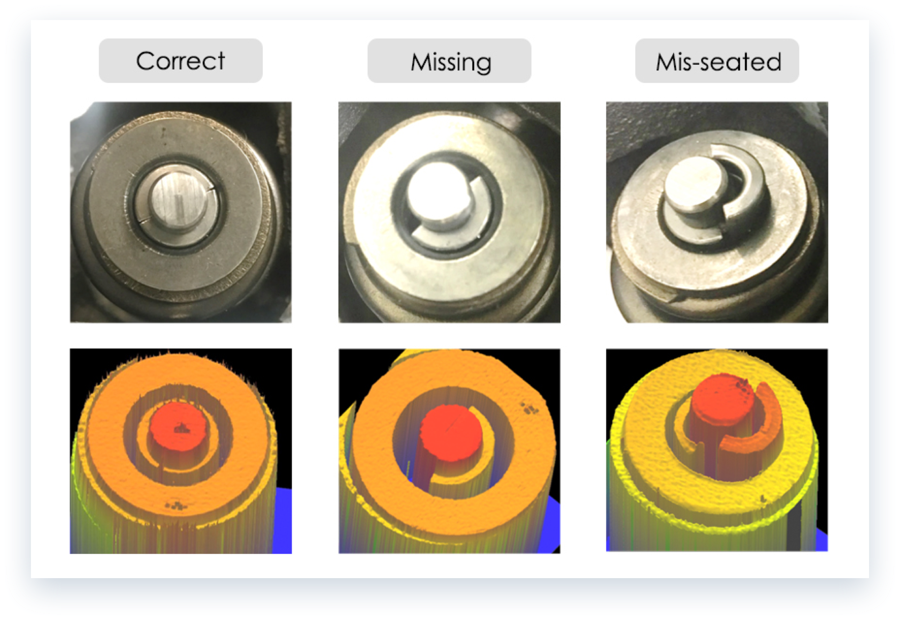

Valve Assembly


Robust3D Valve Assembly (VA) solution inspects the proper installation and placement of valve keepers to ensure
assembly correctness in engine.
Valve keeper lock the valve stem in position in a valve assembly. They have been difficult to error proof.
However, valve keepers are prone to assembly errors, and if not caught, will fail to hold the valve stem in
position, which will cause catastrophic engine failures. Current methods to error-proof this assembly process,
either manual or laser line profiler, are not reliable given the randomness nature of failure modes. Coherix
Robust3D Valve Assembly solution uses the Tru3D smart Sensor to generate 3D math model of valve keepers, and
detects for missing or mis-seated valve keepers. The 3D data can also be archived for a year for future
traceability.
Coherix Robust3D Valve Assembly Verification
Robust3D Valve Assembly Verification Examples
